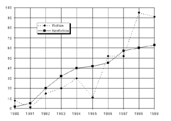

SALES BY CATEGORY FOR GRAMMERCY PRESS, 1980–1989
(in thousands of books)

By approximately what percent did the sale of nonfiction titles increase from 1984 to 1987?
42%
50%
70%
90%
110%
57 − 40 40 = .425 The answer is (A).